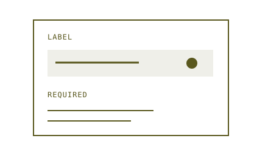

Form inspection
Give every field a voice.
Inspect form controls, labels, required fields, and duplicate IDs from an HTML snippet.

HTML source
The snippet is parsed in an inert template. Results show text and never render your supplied markup.
Field inventory
Ready when you are
Load the example or enter your own input.
How to use Form Surface
- Paste an HTML snippet or load the form example.
- Inspect the fields and their accessible labels.
- Review missing labels and duplicated IDs in the inventory.